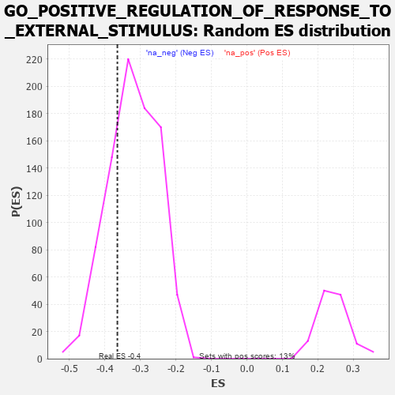

| | | Dataset | 7d |
| Phenotype | NoPhenotypeAvailable |
| Upregulated in class | na_neg |
| GeneSet | GO_POSITIVE_REGULATION_OF_RESPONSE_TO_EXTERNAL_STIMULUS |
| Enrichment Score (ES) | -0.36499748 |
| Normalized Enrichment Score (NES) | -1.1418773 |
| Nominal p-value | 0.25858122 |
| FDR q-value | 0.70921034 |
| FWER p-Value | 1.0 |
Table: GSEA Results Summary
 Fig 1: Enrichment plot: GO_POSITIVE_REGULATION_OF_RESPONSE_TO_EXTERNAL_STIMULUS
Fig 1: Enrichment plot: GO_POSITIVE_REGULATION_OF_RESPONSE_TO_EXTERNAL_STIMULUS
Profile of the Running ES Score & Positions of GeneSet Members on the Rank Ordered List
| PROBE | GENE SYMBOL | GENE_TITLE | RANK IN GENE LIST | RANK METRIC SCORE | RUNNING ES | CORE ENRICHMENT | | 1 | RAC2 | | | 60 | 2.442 | 0.0406 | No |
| 2 | UBE2K | | | 94 | 1.739 | 0.0708 | No |
| 3 | DAPK2 | | | 343 | 0.754 | 0.0542 | No |
| 4 | LRP1 | | | 470 | 0.648 | 0.0511 | No |
| 5 | XRCC6 | | | 694 | 0.560 | 0.0339 | No |
| 6 | HMGB2 | | | 892 | 0.507 | 0.0189 | No |
| 7 | MATR3 | | | 937 | 0.498 | 0.0231 | No |
| 8 | PDCD4 | | | 941 | 0.497 | 0.0326 | No |
| 9 | HMGB4 | | | 1008 | 0.482 | 0.0337 | No |
| 10 | SRC | | | 1128 | 0.459 | 0.0277 | No |
| 11 | PSMD7 | | | 1152 | 0.454 | 0.0337 | No |
| 12 | PSMD2 | | | 1181 | 0.450 | 0.0391 | No |
| 13 | PSMD4 | | | 1811 | 0.335 | -0.0341 | No |
| 14 | TRIM5 | | | 1852 | 0.327 | -0.0327 | No |
| 15 | PSMD6 | | | 1858 | 0.326 | -0.0269 | No |
| 16 | PAK3 | | | 1889 | 0.322 | -0.0243 | No |
| 17 | CCR4 | | | 1959 | 0.312 | -0.0269 | No |
| 18 | RAF1 | | | 2011 | 0.303 | -0.0274 | No |
| 19 | PSME4 | | | 2143 | 0.285 | -0.0384 | No |
| 20 | SYK | | | 2186 | 0.278 | -0.0382 | No |
| 21 | C1QBP | | | 2189 | 0.278 | -0.0329 | No |
| 22 | PSMF1 | | | 2251 | 0.268 | -0.0354 | No |
| 23 | ANO6 | | | 2339 | 0.255 | -0.0414 | No |
| 24 | MIF | | | 2357 | 0.252 | -0.0386 | No |
| 25 | SIN3A | | | 2361 | 0.251 | -0.0340 | No |
| 26 | MET | | | 2430 | 0.240 | -0.0379 | No |
| 27 | PSMD5 | | | 2560 | 0.218 | -0.0499 | No |
| 28 | PUM2 | | | 2627 | 0.209 | -0.0542 | No |
| 29 | SASH1 | | | 2682 | 0.201 | -0.0570 | No |
| 30 | DSCAM | | | 2689 | 0.200 | -0.0538 | No |
| 31 | SLIT2 | | | 2724 | 0.195 | -0.0543 | No |
| 32 | CUL1 | | | 2735 | 0.193 | -0.0518 | No |
| 33 | BTK | | | 2958 | 0.156 | -0.0768 | No |
| 34 | PSMD9 | | | 3179 | 0.125 | -0.1023 | No |
| 35 | AP1G1 | | | 3210 | 0.121 | -0.1037 | No |
| 36 | SMAD3 | | | 3303 | 0.105 | -0.1133 | No |
| 37 | TAB1 | | | 3351 | 0.097 | -0.1173 | No |
| 38 | MED1 | | | 3405 | 0.089 | -0.1223 | No |
| 39 | PQBP1 | | | 3526 | 0.072 | -0.1361 | No |
| 40 | MAPK3 | | | 3589 | 0.062 | -0.1427 | No |
| 41 | SKP1 | | | 3663 | 0.049 | -0.1510 | No |
| 42 | CD180 | | | 3686 | 0.046 | -0.1529 | No |
| 43 | DHX9 | | | 3693 | 0.044 | -0.1528 | No |
| 44 | CSF1 | | | 4074 | -0.019 | -0.2006 | No |
| 45 | PSME3 | | | 4280 | -0.056 | -0.2255 | No |
| 46 | USF1 | | | 4296 | -0.059 | -0.2262 | No |
| 47 | LRRK2 | | | 4467 | -0.087 | -0.2460 | No |
| 48 | SNW1 | | | 4514 | -0.096 | -0.2500 | No |
| 49 | P2RX4 | | | 4813 | -0.161 | -0.2846 | No |
| 50 | VAMP8 | | | 4905 | -0.179 | -0.2926 | No |
| 51 | EP300 | | | 4941 | -0.186 | -0.2933 | No |
| 52 | XRCC5 | | | 4946 | -0.187 | -0.2902 | No |
| 53 | PRKDC | | | 4955 | -0.189 | -0.2874 | No |
| 54 | PDPK1 | | | 5043 | -0.207 | -0.2944 | No |
| 55 | GPR4 | | | 5219 | -0.250 | -0.3116 | No |
| 56 | FABP4 | | | 5509 | -0.322 | -0.3419 | No |
| 57 | FGFR1 | | | 5543 | -0.332 | -0.3395 | No |
| 58 | WNK1 | | | 5650 | -0.362 | -0.3458 | No |
| 59 | PSMD1 | | | 5674 | -0.367 | -0.3415 | No |
| 60 | TLR2 | | | 5761 | -0.395 | -0.3446 | No |
| 61 | VAMP7 | | | 5777 | -0.399 | -0.3386 | No |
| 62 | LAMP1 | | | 5796 | -0.404 | -0.3329 | No |
| 63 | SNX4 | | | 5834 | -0.415 | -0.3294 | No |
| 64 | TTBK1 | | | 5969 | -0.460 | -0.3373 | No |
| 65 | RAC1 | | | 6036 | -0.484 | -0.3361 | No |
| 66 | CALR | | | 6077 | -0.499 | -0.3313 | No |
| 67 | STK39 | | | 6274 | -0.563 | -0.3451 | No |
| 68 | MALT1 | | | 6432 | -0.634 | -0.3525 | Yes |
| 69 | DYSF | | | 6481 | -0.654 | -0.3457 | Yes |
| 70 | TRPV4 | | | 6515 | -0.668 | -0.3366 | Yes |
| 71 | PAK1 | | | 6691 | -0.757 | -0.3439 | Yes |
| 72 | EGFR | | | 6708 | -0.765 | -0.3308 | Yes |
| 73 | GHSR | | | 6937 | -0.894 | -0.3421 | Yes |
| 74 | DNM1L | | | 6963 | -0.913 | -0.3272 | Yes |
| 75 | PDE2A | | | 6985 | -0.927 | -0.3115 | Yes |
| 76 | CCR2 | | | 7003 | -0.939 | -0.2951 | Yes |
| 77 | KLKB1 | | | 7216 | -1.090 | -0.3005 | Yes |
| 78 | GRN | | | 7319 | -1.194 | -0.2899 | Yes |
| 79 | NPY | | | 7465 | -1.356 | -0.2815 | Yes |
| 80 | MCU | | | 7644 | -1.637 | -0.2717 | Yes |
| 81 | MUC2 | | | 7802 | -2.066 | -0.2508 | Yes |
| 82 | TRAF6 | | | 7818 | -2.157 | -0.2101 | Yes |
| 83 | FYN | | | 7881 | -2.622 | -0.1662 | Yes |
| 84 | MUC19 | | | 7900 | -2.797 | -0.1132 | Yes |
| 85 | PSMD3 | | | 7907 | -2.887 | -0.0569 | Yes |
| 86 | PSMD8 | | | 7931 | -3.286 | 0.0051 | Yes |
Table: GSEA details [plain text format]

Fig 2: GO_POSITIVE_REGULATION_OF_RESPONSE_TO_EXTERNAL_STIMULUS: Random ES distribution
Gene set null distribution of ES for GO_POSITIVE_REGULATION_OF_RESPONSE_TO_EXTERNAL_STIMULUS